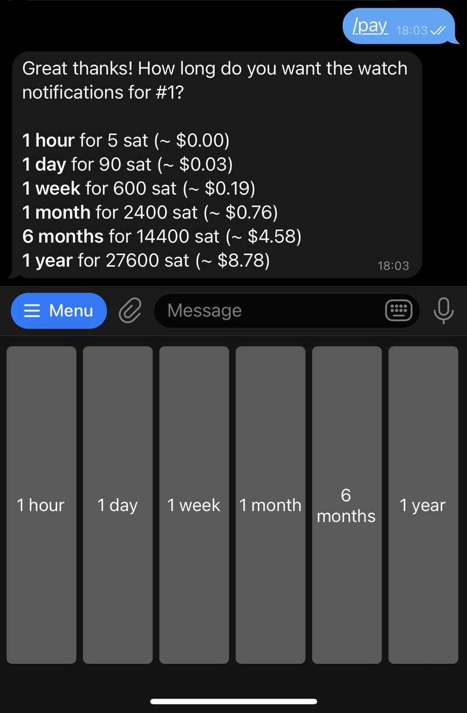
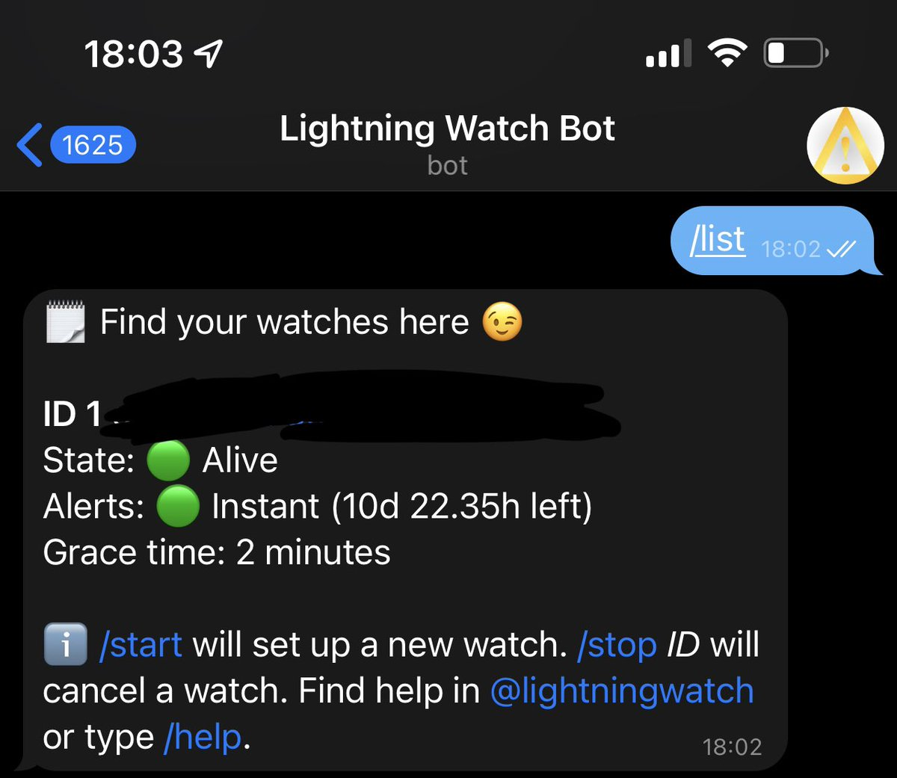
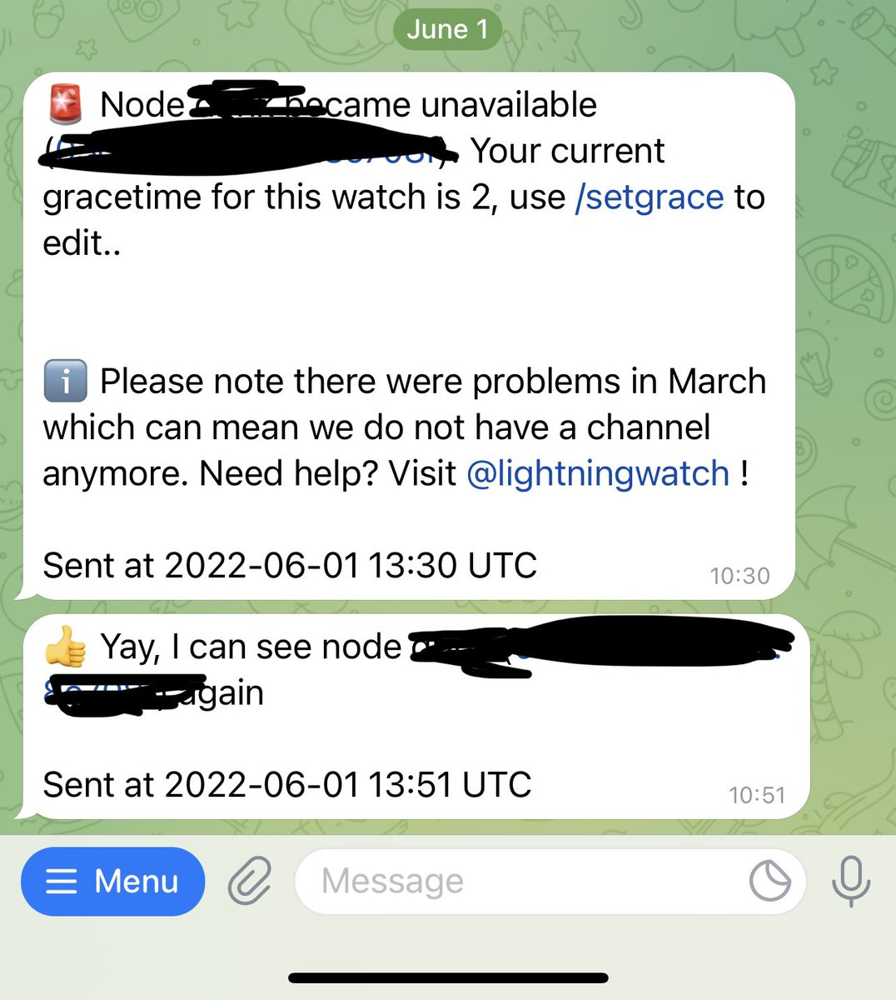
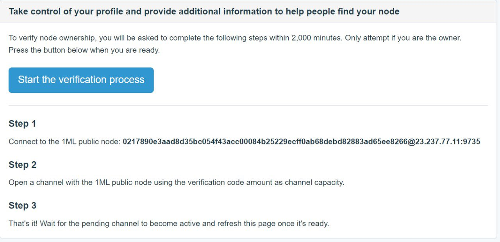

10 Passos por Diego Kolling
Junho 2022
| Twitter Este artigo é uma adapção do Tweet original de Diego Kolling |
|---|
Neste artigo são apresentados 10 passos que Diego Kolling considera essenciais para o início da jornada como gestor de Node na Lightning Network.
Estes passos levam em conta que já tenhas todo o processo anterior de instalação de um sistema operativo (RaspiBlitz, Umbrel, MyNode, Citadel), sincronização da blockchain do Bitcoin, 2FA ativado, SEED devidamente protegida e que o Node está estável.
1) Lightning.Watch
2) Balance of Satoshis (BoS)
3) WT
4) LNDg
5) Nome ao node
6) Novos fees padrão
7) Tamanho mínimo de canal
8) Registrar Node no 1ml e no Amboss
9) Primeiro canal SWAP pela Wallet CoinOS
10) Acompanhamento de dever de casa
PASSO 1 - Lightning Watch
A primeira coisa que você quer é saber, em tempo real, se o seu node está on-line (ou não). Alguém que o possa avisar, pelo Telegram, por exemplo Seria o ideal. Para isso existe o Lightning Watch Bot.
Esta dica do Andreas Antonopoulos logo no inicio do seu livro “Mastering the Lightning Network”. “Paz de espírito”.
Abra o site lightning.watch e siga as instruções. Será perguntado se já tem o Node, a sua Node Key ou URI e por ultimo é pedido para abrir um canal privado, para poderem fazer a monotorização.
Abra então um canal de 20 mil Sats, PRIVADO, com o node deles e estabeleça o bot no Telegram.
Canais privados não são anunciados para a legião de nodes LN que, NÃO tentarão rotear por este canal. Este canal não é pra servir de roteamento, é pra servir apenas de informação.
Eis o seu node: (Contudo esta informação aparecerá na conversa do telegram)
https://1ml.com/node/03e691f81f08c56fa876cc4ef5c9e8b727bd682cf35605be25d48607a802526053
O Bot do TG avisará com atraso de 30 mim se o seu Node ficar off-line ou, em tempo real, se você pagar um valor em Sats:

E você pode ficar “pingando” o seu node através do bot pra saber se está tudo bem utilizando o comando “/list”.

DICA: Utilize o comando “/setgrace 2” (min) para ele não te avisar sempre que há qualquer glitch na internet ou na rede Tor!
Veja um exemplo do que acontece quando seu node sai do ar por alguns minutos, por qualquer motivo:

Uma vez ou outra isso vai acontecer, não se preocupe. Problemas na Tor, na energia ou na internet.
Se você reiniciar o Raspi por algum motivo (atualização, por exemplo), conseguirá ver em tempo real o Bot funcionando. É muito bom.
PASSO 2 - Balance of Satoshis (BoS)
Outra coisa que queremos ver montada antes de abrir canais públicos é uma ferramenta que te fale TUDO que está acontecendo no seu node:
Abertura/fechamento de canal
Pagamentos/recebimentos
Roteamentos/Reabastecimentos
E ainda fazer um backup sempre que algo mudar.
O Backup é um arquivo de poucos bytes que você precisará para recuperar seus sats presos em canais LN no caso de você ter algum problema. Raspi queimado, roubado, corrupção de dados, enfim. Seed + backup e você loga em uma outra instância e pronto: fundos recuperados.
É isso o que a “Balance of Satoshis” faz, do @alexbosworth .
E o guia de instalação dele é bem simples:
github.com/alexbosworth/balanceofsatoshis
A instalação do Bot está na mesma página.
É este bot que manda estes pushs:
E é um bot que também pode me dar muita informação remotamente.
A liquidez com algum canal e ainda os ganhos/custos na última semana:
Neste momento já tem um canal com um node que tem um bot do Telegram (Lightning.Watch) que te avisa se ficar off-line.
Você já instalou o BoS e já está 100% bem informado de tudo que se passa no seu node. Já recebe os Backups em tempo real, já interage com ele à distância.
Vamos seguir?
PASSO 3 - Watch Tower (WT)
Você precisa instalar uma WatchTower, que é literalmente um node que funcionará como uma torre de controle pra você. É ele que vai agir em seu nome no caso de você ficar off-line e alguém tentar, propositalmente, ou não, roubar os fundos do canal que tem com você.
Uma das Watch Tower mais reconhecidas é a da @BTC_LN em parceria com a @voltage_cloud
Pode encontrar o node deles abaixo. No passo 4
lightningnetwork.plus/watchtowerPASSO 4 - LNDg
Você vai instalar o LNDg, uma ferramenta do @CryptoSharks131, open source, com um grupo INCRÍVEL do Telegram.
https://t.me/+03YtC6VgBLQxYWYx
Você vai fazer MUITA coisa pelo app dele MAS, por hora, vamos focar na segurança de uma WT.
Caso não utilize Umbrel instale o LNDg por aqui:
github.com/cryptosharks131/lndg
No caso do Umbrel, simplesmente procure a aplicação e instale.
Dentro do app, não tem segredo: é clicar em “Watchtower” e introduzir o node da
WT indicado no passo anterior.
Pronto, agora o node pode passar por um cataclisma com você em férias na Coréia, que alguém olhará por você.
Tenha em mente o seguinte:
De qualquer lugar do mundo você pode acessar seu saldo on-chain ou acessar um node Lightning (rodando o LND), para fazer o processo de recuperação e ter tudo de novo são e salvo.
Para quem usa Umbrel, um guia pra você guardar é esse aqui:
https://community.getumbrel.com/t/how-to-restore-your-node-wallet/3602
Para qualquer outra implementação que use o LND, esse link ajuda:
https://docs.lightning.engineering/lightning-network-tools/lnd/disaster-recovery
Respire fundo, tudo vai dar certo. Basta seed + backup.
Eu já tomei vários sustos e achei que não fosse ver meus sats de volta. Natural de qualquer tecnologia nova.
Mas sempre os recuperei no final, só para perceber que o medo nunca foi justificado. Eu é que não tinha intimidade com a tecnologia que, agora, eu passo pra vocês.
Uma referência legal de de tutoriais é o Substack do Darth Coin. Já me ajudou MUITO:
https://darthcoin.substack.com/
PASSO 5 - Nome ao Node
Para dar um nome ao seu node: SSH nele (No terminal):
ssh -t umbrel@umbrel.local
A senha, se você não tiver mudado, é moneyprintergobrrr (Pra mudar a senha é só digitar passwd)
Abra o arquivo de configuração lnd.conf
(Umbrel < 0.4) sudo Nano umbrel/lnd/lnd.conf
(Umbrel >= 0.5) sudo nano ~/umbrel/app-data/lightning/data/lnd/lnd.conf
Vai abrir uma tela de edição.
CUIDADO COM ESSA TELA Qualquer espaço errado e seu node não “carrega” normalmente!
Eu já fiz isso e não é legal. Você tem que procurar depois onde está o errinho, por qualquer que seja.
Dentro do bloco [Applications Options], adicione:
alias=NOMEDOSEUNODE
Pronto. Fácil achar.
PASSO 6 - Novos fees padrão
AINDA NESSE ARQUIVO:
No parágrafo [Bitcoin], você deve procurar por:
bitcoin.basefee=0
Assim, você não cobrará custo FIXO pelo roteamento. Isso é bom pra alguns rankings;
bitcoin.feerate=500
Significa custo VARIÁVEL de 500 sats pra cada 1 milhão de sats que você rotear.
500, na minha experiência, é um bom valor default pois, de todos os canais que roteiam, os meus giram de 100 a 1000ppm. Com esses valores novos (ao invés do 1ppm e 1 sat fixo padrão), você não corre o risco de ver o seu canal drenado logo no início (para depois reabastecer no prejuízo).
Como o canal leva 3 confirmações pra ser aberto, então você pode abrir e ir dormir tranquilo. Se os valores forem altos demais, você não irá rotear nada e poderá baixa-los. O contrário também é verdade.
De volta ao parágrafo [Applications Options] no mesmo arquivo lnd.conf
PASSO 7 - Tamanho mínimo de canal
Vamos definir tamanho mínimo de canais pra abrirem com você. Isso pode ser bom se você já tem um planejamento de abrir canais, por exemplo, de 2-4MM de sats e não querer canais muito menores que isso.
Canais muito menores podem acabar “congestionando” o fluxo no seu node, por funcionarem como uma espécie de gargalo. Imagine uma estrada que, em uma ponta, tem 10 pistas e, na outra, tem uma pista só.
minchansize=1000000 (1 milhão de sats)
Se você quiser botar pra f@der
Ative os canais WUMBO (maiores que 16MM de sats):
protocol.wumbo-channels=true
PASSO 8 - Registrar Node no 1ml e no Amboss
Pronto. Chegou a hora de marcar território. Fale um pouco mais de você em quem quiser procurá-lo pela @ambosstech ou pela 1ml.
Fale da sua estratégia, seu setup. Passa segurança. Pode aumentaras aberturas de canais com você.
Vá ao site http://1ml.com, procure seu node (agora pelo nome 😊), e vá em “Claim Node”.
Você deve ver uma tela parecida com a tela abaixo, mas com os seus dados.

Você deverá abrir um canal com eles de valor ESPECÍFICO, pra que eles saibam que é você mesmo. Você deve primeiro abrir conta com eles pelo site.
Agora, na amboss.space eles têm uma linda interface que conquistou todos os noderunners. Hoje, na verdade, já é o lugar número 1 para consultas.
O registro com eles é diferente: Você precisa assinar uma mensagem com o seu node.
Como? Você vai procurar o seu node na plataforma e ir em login.
Você vai instalar o @RTL_App no seu node e utilizar a opção “assinar mensagem”.
Eis o site do Ride The Lightning (RTL): https://ridethelightning.info
Pra você instala-lo em qualquer lugar. Na Umbrel, eles tem app, claro.
PASSO 9 - Primeiro canal SWAP pela Wallet CoinOS
Voce vai abrir um canal com a @coinoswallet, com a @usebipa ou com a @walletofsatoshi e fazer o que chamamos de SWAP.
Assim que abrir qualquer um desses canais, você vai enviar toda a quantia para um endereço que você CONTROLE, aberto com eles.
Ou seja: Você vai gerar uma invoice PARA VOCÊ, a partir da CoinOS, WoS ou Bipa, e PAGAR com o seu node que, agora, tem um canal aberto com eles.
Você está enviando seus sats para o node deles.
Porque? Porque agora, do node deles, você enviará para o seu node ON-CHAIN!
O que você fez foi, basicamente, criar capacidade de recebimento.
Quando você paga a invoice que você mesmo criou, os sats do canal que você abriu vão para o lado deles e, portanto, podem ser usados para te pagar.
Ao mesmo tempo, esses sats estão de volta na carteira do seu node e você poderá abrir com eles novos canais.
Ex: com 10 milhões de sats, você pode abrir 3 canais de 10 milhões com eles e ainda ficar com 10 milhões de sats na conta! Como assim?
Abre canal de 10M com a CoinOS -> manda pra sua conta na CoinOS pela LN -> traz de volta on-chain
Abre canal de 10M com a WOS -> manda pra sua conta na WoS pela LN -> traz de volta on-chain
Abre canal de 10M com a Bipa -> manda pra sua conta na Bipa pela LN -> traz de volta on-chain
Você agora pode RECEBER, por três canais diferentes, 10MM em cada, e ainda tem 10MM na conta
(Você tem que abater os fees de transação, obvio)
PASSO 10 - Acompanhamento de dever de casa
Você cumpriu esse checklist e está com a mente tranquila por ter o controle total do seu node. Você sabe que, mesmo que tudo dê errado, de um computador por perto você pode recuperar tudo.
Você tem notícias de tudo o que acontece no seu node em tempo real e, na dúvida, pode até perguntar pra ele. Você pode conversar com o seu node!
E agora?
Agora, você vai ver a mágica acontecer. Vai ver os pagamentos sendo roteados, seus canais expedidores sendo drenados e os seus inbounders ficando cheios.
Você vai querer reabastecê-los lucrativamente.
Você vai setar seus parâmetros de lucratividade no LNDg (e muitos outros parâmetros) e ver como eles reagem.
Você vai interagir com o seu node e ver o que funciona ou não.
Você vai ver se os canais com os quais abriu são bons ou não, se roteiam bem ou não e etc.
Seu node será capaz de te sugerir novas conexões. E assim você vai mexendo, testando, abrindo, fechando canais e aprendendo.
Quem sabe daqui a algum tempo não está ensinando também?
As coisas estão andando muito rápido.
Muita coisa já foi automatizada desde que comecei.
Os fees, os rebalanceamentos, a definição do quanto quero ter de margem, tudo isso hoje é automático e meu node trabalha muito mais sozinho do que comigo.
Eu cuido dele uma vez por dia e olhe lá, como um Tamagochi que me deixa quase todos os dias uns satoshinhos ao rotear pagamentos no mundo todo.
E a maior parte do que faço é pelo LNDg, cujo tutorial em video pode ver abaixo (Ingês):
https://www.youtube.com/watch?v=e1ZGy-WaUnE
FIM
Salve esta página para o dia que você começar nessa revolução onde você pode ser totalmente INDEPENDENTE e ainda ajudar a construir uma nova Web:
A Web do dinheiro.